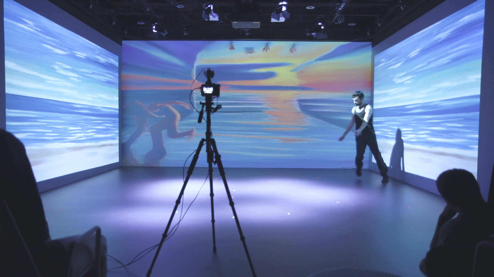
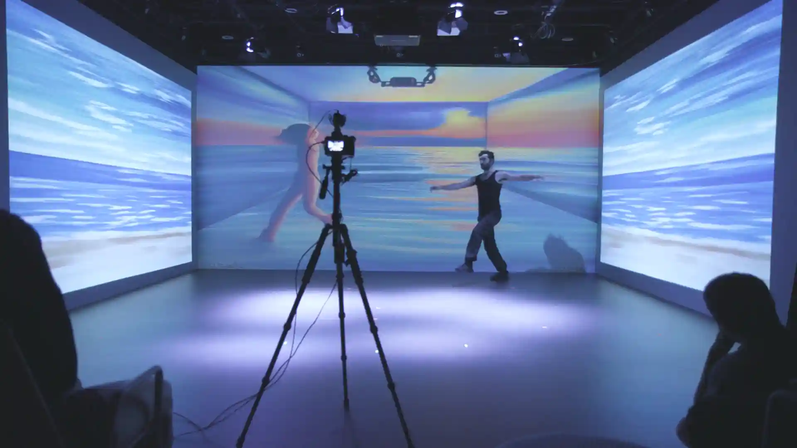
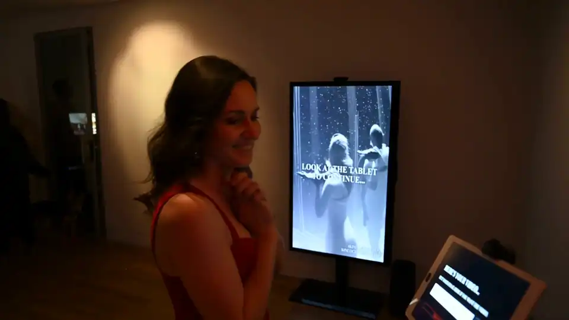
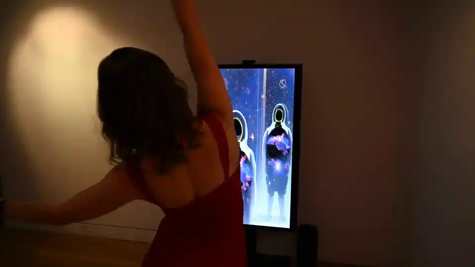

KINETIC DIFFUSION is a performance and an installation using AI image generation to transform a camera feed in real-time, conjuring new characters across landscapes, visual
styles, and surreal scenes.


KINETIC DIFFUSION builds on the history of dancemakers collaborating with
technology by merging spectacle with education to take something complex and make it embodied, dynamic, and
approachable.


In the KINETIC DIFFUSION installation that accompanies the performance, participants can interact with
the technology themselves, writing prompts and exploring how movement is transformed by AI.
Prompts from the installation influence the prompts in the performance, creating a unique experience every time the piece is performed.